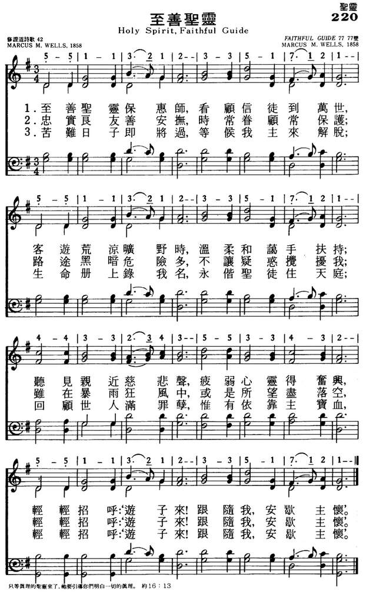

LX1774
Holy Spirit, Faithful
Guide _Wells
220至善圣灵
|
|
|
|
1 Holy Spirit, faithful Guide,
Ever near the Christian’s side;
Gently lead us by the hand,
Pilgrims in a desert land;
Weary souls fore’er rejoice,
While they hear that sweetest voice
Whisp'ring softly, “Wand'rer, come!
Follow Me, I’ll guide thee home.”
2 Ever present, truest Friend,
Ever near Thine aid to lend,
Leave us not to doubt and fear,
Groping on in darkness drear;
When the storms are raging sore,
Hearts grow faint, and hopes give o’er.
Whisp'ring softly, “Wand'rer, come!
Follow Me, I’ll guide thee home.”
3 When our days of toil shall cease,
Waiting still for sweet release,
Nothing left but heav'n and prayer,
Wond'ring if our names were there;
Wading deep the dismal flood,
Pleading naught but Jesus’ blood,
Whisp'ring softly, “Wand'rer, come!
Follow Me, I’ll guide thee home.”
Amen.
Source: Worship
and Service Hymnal: For Church, School, and Home #94
|
220至善圣灵
1.至善圣灵保惠师，看顾信徒到万世，
客游荒凉旷野时，温柔和蔼手扶持；
听见亲近慈悲声，疲弱心灵得奋兴，
轻轻招呼游子来，跟随我安歇主怀。
2.忠实良友善安抚，时常眷顾常保护，
路途黑暗危险多，不让疑惑搅扰我；
虽在暴雨狂风中，或是所望尽落空，
轻轻招呼游子来，跟随我安歇主怀。
3.苦难日子即将过，等候我主来解脱，
生命册上录我名，永偕圣徒住天庭；
回顾世人满罪孽，惟有依靠主宝血，
轻轻招呼游子来，跟随我安歇主怀。
|
|
https://www.mred365.cn/szxg/7223.html

https://hymnary.org/hymn/CP1964/page/136
 |
|
|
|
-

-
LX1774
Holy Spirit, Faithful
Guide
220至善圣灵
|
hort Name: |
M. M. Wells |
|
Full Name: |
Wells, M. M. (Marcus Morris), 1815-1895 |
|
Birth Year: |
1815 |
|
Death Year: |
1895 |
Converted to Christianity
as a youth at a mission in Buffalo, New York, Marcus Morris Wells (b.
Cooperstown, NY, 1815; d. Hartwick, NY, 1895) spent most of his life near
Hartwick as a farmer and maker of farm implements. He is remembered in
hymnody for writing both the text and tune of "Holy Spirit, Faithful Guide."
"On a Saturday afternoon, October 1858, while at work in my cornfield, the
sentiment of the hymn came to me," writes Wells. "The next day, Sunday,
being a very stormy day, I finished the hymn and wrote the tune for it and
sent it to Prof. I. B. Woodbury." Isaac Woodbury was the editor of the New
York Musical Pioneer, and the original text and tune were first
published in that periodical's November 1858 issue.
Bert Polman
GUIDE has been associated with Psalm 121 since the 1887 Psalter.
GUIDE is a rounded bar form (AABA); it has basically one rhythmic pattern and a
very simple harmony. One antiphonal arrangement that works nicely is to have a
soloist ask the opening question and everyone sing the rest in reply. The tune's
simplicity invites unaccompanied singing in harmony.
--Psalter Hymnal Handbook, 1988
Graphic Bob and Christmas Book (2)HOW TO USE THIS BLOG
1) The Almanac. Click on the month you want in the side-bar, then the specific
date. The blog will tell you what happened in hymn history on that day.
2) Reflections. There is always a current article on a hymn. But you can find
many others by clicking on the Index tab. (More being added all the time.)
3) Topical Articles are opinion pieces on many aspects sacred music.
4) To Donate. If you can help with the cost of developing and maintaining this
site, click on the “Support” tab above and the page will show you how.
Also see 30+ Ideas for Promoting Hymn Singing in your church.
Words: Marcus Morris Wells (b. Oct. 20, 1815; d. July 17, 1895)
Music: Marcus Morris Wells
Links:
Wordwise Hymns (none)
The Cyber Hymnal
Hymnary.org
Note: The Cyber Hymnal gives the author’s middle name as McKibben. Others have
Morris. Little else is known of the man, except that this hymn, published in
1858, germinated in an unusual place, as you’ll see.
What kind of things go through your mind at idle moments? Or when you’re doing
repetitive tasks that require little concentration? Long ago, I worked for a
couple of years as the custodian of a large church. It doesn’t take much brain
power to vacuum what seemed like miles of carpet! So during that time I thought
through a detailed study of Christian discipleship. It’s material I’m still
using.
Some of our hymns were written at odd moments too. The Solid Rock (“My hope is
built on nothing less…”) was written by a carpenter on his way to work. Precious
Promise was written by a man while he was commuting to his job on the train.
Rock of Ages was created when a man, out for a walk, had to take shelter from a
storm in a rocky crevice. He wrote the first part of it on the back of a playing
card he spotted on the path.
The hymn we’ll consider today was written by a farmer named Marcus Wells. He
says, “On a Saturday afternoon in October, 1858, while at work in my cornfield
near Hardwick, New York, the sentiment of this hymn came to me. The next day [a
rainy one], I finished the hymn and wrote a tune for it.”
The hymn is called Holy Spirit, Faithful Guide. If we read between the lines a
bit, it sounds as though it concerns a child of God who is concerned to follow
the right path in life, and perhaps has strayed, from time to time. While there
is not a great depth of Bible truth in the song, it has a warmth of devotion
that is compelling.
In the New Testament, the Spirit of God is spoken of as a guide a number of
times. Even Christ, in the days of His earthly life, was led by the Spirit
(Matt. 4:1). Speaking of the coming Day of Pentecost, Jesus said, “When He, the
Spirit of truth, has come, He will guide you into all truth” (Jn. 16:13). “The
Helper, the Holy Spirit, whom the Father will send in My name, He will teach you
all things” (Jn. 14:26).
This alerts us to the fact that the Spirit’s guidance is closely associated with
revealed truth, the truth of God’s holy Word. It’s not a matter of intuitively
pulling ideas out of thin are. The Lord wants us to learn what we need to know
from the Bible, in order to live lives pleasing to Him (II Tim. 3:16-17). Those
who are children of God, through faith in Christ, are characteristically led by
the Holy Spirit. (Rom. 8:14).
He revealed the Bible’s truth to its authors in the first place. “Holy men of
God spoke as they were moved by the Holy Spirit” (II Pet. 1:21). Then, as He
speaks to us, through God’s Word, we learn the things we need to know to live
fulfilling lives pleasing to God. “God has revealed them to us through His
Spirit” (I Cor. 2:10). In all of life, the Holy Spirit is our Guide.
As we meditate on the Word of God, we learn to see all of life from God’s point
of view. We are “transformed by the renewing of [our] mind” (Rom. 12:2). And as
we memorize the Scriptures, we are able to make informed moral decisions day by
day, choosing the right, and shunning the wrong. As the psalmist put it, “Your
word have I hidden in my heart, that I might not sin against You….the entrance
of your words gives light” (Ps. 119:11, 130).
That’s the essential message of Marcus Wells’s hymn.
CH-1) Holy Spirit, faithful guide, ever near the Christian’s side;
Gently lead us by the hand, pilgrims in a desert land.
Weary souls fore’er rejoice, while they hear that sweetest voice,
Whispering softly, “Wanderer, come, follow Me, I’ll guide thee home.”
CH-2) Ever present, truest Friend, ever near Thine aid to lend,
Leave us not to doubt and fear, groping on in darkness drear.
When the storms are raging sore, hearts grow faint and hopes give o’er.
Whispering softly, “Wanderer, come, follow Me, I’ll guide thee home.”
CH-3) When our days of toil cease, waiting still for sweet release,
Nothing left but heaven and prayer, wondering if our names are there;
Wading deep the dismal flood, pleading naught but Jesus’ blood,
Whispering softly, “Wanderer, come, follow Me, I’ll guide thee home.”
The second line of CH-3 leaves us with doubts that are unnecessary. “Wondering
if our names are there”? That is, whether they’re recorded in the Lamb’s Book of
Life (Rev. 20:15; 21:27). Perhaps the author is speaking of moments of doubt
that may come in times of depression or illness. But biblically the Christian
has no reason to “wonder.”
“For you did not receive the spirit of bondage again to fear, but you received
the Spirit of adoption by whom we cry out, ‘Abba, Father.’ The Spirit Himself
bears witness with our spirit that we are children of God” (Rom. 8:15-16).
Perhaps the line should read, “joyful that our names are there.” For further
information on assurance, see my article: Assurance of Salvation.
Questions:
1) What other ministries does the Holy Spirit have in the lives of believers?
2) What other hymns about the person and work of the Holy Spirit do you know and
use?
Links:
Wordwise Hymns (none)
The Cyber Hymnal
Hymnary.org
https://wordwisehymns.com/2015/06/10/holy-spirit-faithful-guide/
INTRO.:
A song which points out that the Lord has promised to guide us with His eye is
"Holy Jesus, Faithful Guide." The text was written and the tune (Guide or
Faithful Guide) was composed both by Marcus Morris Wells, who was born on Oct.
20, 1815, at Otsego County, NY, and after being converted as a youth at a
mission in Buffalo, NY, worked as a farmer and toolmaker first near Cooperstown
and then at Hardwick, both in Otsego County. On a Saturday afternoon in October
of 1858, he was working in his cornfield when the sentiment of this hymn came to
him. The following day he finished it, provided a melody, and sent it to Isaac
B. Woodbury. When it arrived in New York City, NY, Woodbury had gone south
because of his health, but his associate, Sylvester Main, was preparing the
material for the Nov., 1858, issue of the New
York Musical Pioneer, Woodbury’s monthly musical periodical, and this hymn
was included.
The first known appearance of the song in a hymnbook seems to have been in The
Sacred Lute edited by T. E. Perkins in 1864, and it became
fairly well known after being used in Ira D. Sankey’s 1878 Sacred
Songs and Solos. Wells died near Hardwick on July 17, 1895. The song was
originally entitled "Holy Spirit, Faithful Guide." Though the years, some
brethren have objected to hymns directed to the Holy Spirit. I have seen this
hymn in older books used among brethren in the late 1800’s and early 1900’s
altered to "Holy Jesus, Faithful Guide" or "Holy Savior, Faithful Guide." Among
hymnbooks published by members of the Lord’s church during the twentieth century
for use in churches of Christ, the song appeared in its original form in the
1963 Christian
Hymnal edited by J. Nelson Slater. Today it is found, with
stanza 1 and 2 only, in the 1992 Praise
for the Lord edited by John P. Wiegand.
The song points to Jesus Christ as our guide through life from earth to heaven.
I. Stanza 1 identifies the Lord as our guide
"Holy Jesus, faithful guide, Ever near the Christian’s side, Gently lead us by
the hand,
Pilgrims in a desert land. Weary souls for-e’er rejoice, While they hear that
sweetest voice."
A. Jesus, as our faithful guide, has promised to be with us even to the end of
the age: Matt. 28.20
B. The reason that we need Him is that we are but pilgrims in a desert land: 1
Pet. 2.11-12
C. Therefore, to find guidance in this world, we need to listen to His voice as
found in the inspired scriptures: 2 Tim. 3.16-17
II. Stanza 2 identifies the Lord as our friend
"Ever present, truest Friend, Ever near, Thine aid to lend, Leave us not to
doubt and fear,
Groping on in darkness drear. When the storms are raging sore, Hearts grow
faint, and hopes are o’er:"
A. Jesus was identified as a friend of sinners: Matt. 11.19
B. With His presence, we have nothing to fear in this life: Heb. 13.5-6
C. As our friend, He will help us in the storms of life and serve as the
captain of our salvation: Heb. 2.10
III. Stanza 3 identifies the Lord as our Savior
"When our days of toil shall cease, Waiting still for sweet release, Nothing
left but heaven and prayer,
Wondering if our names are there, Wading deep the dismal flood, Pleading nought
but Jesus’ blood:"
A. There will come a time when our days of toil shall cease and we shall find
sweet release in death: Heb. 9.27
B. God has promised His people that their names are written in heaven: Lk.
10.20 (Some might object to the statement, "Wondering if our names are there,"
and this may be why the stanza is omitted in Praise
for the Lord. It could be argued that, while Christians do have assurance,
we really will not know as an absolute fact that our names will be there until
after death, but one might also substitute, "Knowing that our names are there.")
C. The reason that we can have our names written in heaven is that Jesus’s
blood provides cleansing from all sin: 1 Jn. 1.7
CONCL.:
The chorus ends each stanza with the admonition to listen to the words of the
Lord, come to Him, and follow His leading that He might guide us home.
"Whisper softly, ‘Wanderer, come!
Follow me, I’ll guide thee home."
Those who believe that the scriptures are God’s final revelation to mankind and
the means by which He directs our paths do not understand that either Christ
Jesus or the Holy Spirit speaks to people personally today. However, by
believing and obeying the teaching of God’s written word, we indeed are able to
look unto "Holy Jesus, Faithful Guide."
https://hymnstudiesblog.wordpress.com/2008/06/23/quotholy-jesus-faithful-guidequot/